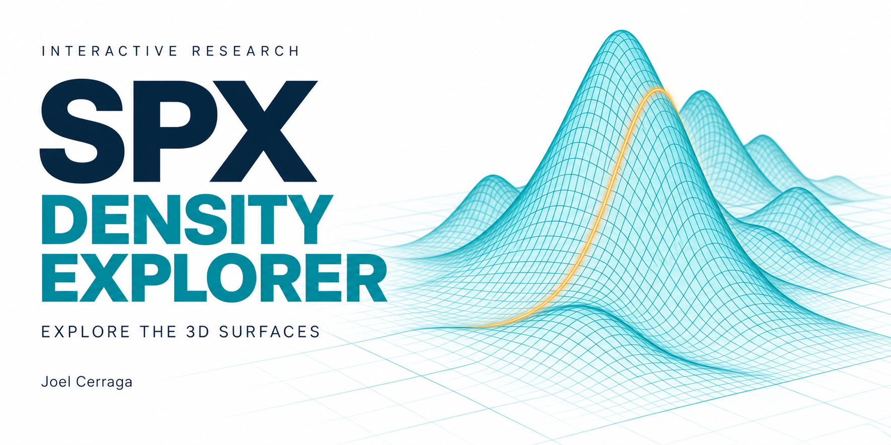

The interactive companion
Explore the
density surfaces.
Four ways to inspect the research, from known synthetic densities to comparisons across observed SPXW snapshots.

01–02 / Controlled experiments
Begin with a known distribution.
These explorers sweep across maturities at one synthetic valuation setup.
 Synthetic benchmark
Synthetic benchmark
Synthetic maturity surface
Compare estimated densities with a known analytical benchmark. Move through maturities from 30 to 365 days and inspect the linked histogram slices.
 Calendar consistency
Calendar consistency
Joint maturity calibration
Compare independent fits with a family of densities calibrated together. See how calendar constraints change consistency across maturities.
“Joint” means that the marginal densities are calibrated together across maturities. It does not mean that a joint distribution of future price paths has been estimated.
03–04 / Market observations
Then examine the empirical cases.
The first market surface and the final comparison retain their separate research contexts.
 Market observations
Market observations
First empirical surface
Explore the first SPXW market case across three expiries. Compare fitted density slices and smoothing choices from the original empirical experiment.
 Final empirical study
Final empirical study
Dated density comparisons
Compare 31 August and two 18 September observations. Inspect a fixed expiry or an assumed 60-day mixture, with conditional probability ranges.
The dated explorer plays only the three observed snapshots. The common 60-day view uses an assumed mixture across maturities, with no invented observation dates.
How to read the graphs
Look at the slices as well as the surface.
Drag to rotate, scroll to zoom and hover for values. Use each explorer’s maturity or observation controls to update its linked slice.
- Terminal level: the synthetic explorers use index points. The empirical explorers divide by each expiry’s inferred forward; a value of 1 is at that forward.
- Density height: probability is an area under the density over a range, rather than the height at one point.
- Surface joins: connecting facets aid viewing. They do not establish fitted densities at every intermediate maturity.
How to interpret the evidence
Keep the pricing measure in view.
As Bahra (1997) explains in Implied risk-neutral probability density functions from option prices, these densities are inferred under a risk-neutral pricing measure. Their probabilities are not direct forecasts of actual market outcomes.
The final explorer’s feasible ranges hold the bin support, inferred carry and selected quotes fixed. Read them alongside the retained held-out errors and unresolved numerical fold.
Viewing the explorers. Each opens as a standalone page with its plotting code and data included, so a downloaded copy also works offline. The 3D panels need a browser with WebGL support. Static previews and the final paper remain available above.
References
Bahra, B. (1997) Implied risk-neutral probability density functions from option prices: theory and application. Bank of England Working Paper No. 66. Available at: https://www.bankofengland.co.uk/working-paper/1997/implied-risk-neutral-probability-density-functions-from-option-prices (Accessed: 28 September 2026).